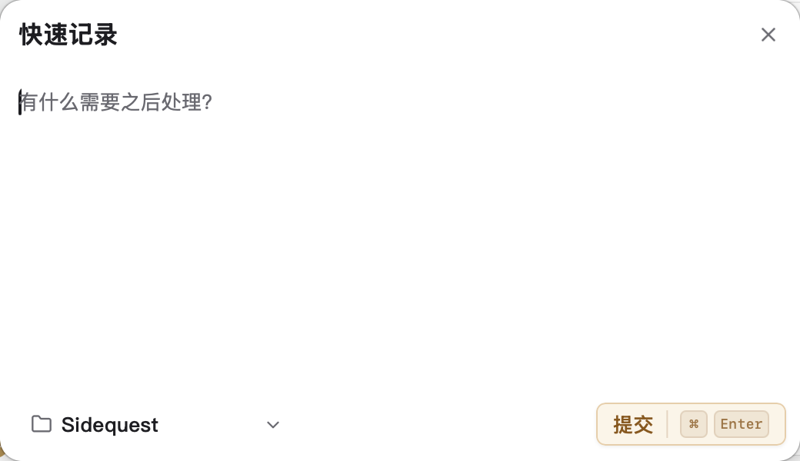

AI CODING SESSION
MAIN QUEST · IN PROGRESS
优化 Quest 详情体验
Agent 正在检查当前实现。此时发现一条值得以后处理、但不应该打断当前目标的旁支。
AGENT
我会继续完成当前目标，并保持现有交互状态。

⌘
⇧
Space
01
从任意应用唤起
不离开当前 AI Coding 上下文
02
提交后回到原应用
Quick Capture 关闭，输入焦点回到当前工作